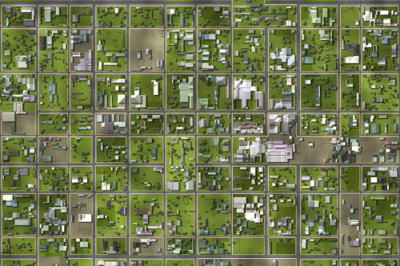
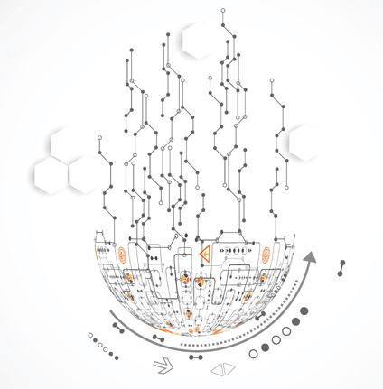

測量事業
 「測量工学
「測量工学（Survey Engineering)」
現在の測量業務は機械化・デジタル化が進んでおり、現場ではGPSとTS（トータルステーション）で測量作業を使い、オフィスではCADシステムで図化作業をします。当社では、この傾向をさらに強めて、1つの測量案件の着手計画から納品に至るプロセス全体のクラウド化を推進しています。当社の測量技術者は、ソフトウェアとハードウェアの両面から、測量業務のデータストリームを主体的にコントロールします。

「測量業務とは」
測量業務は、土地や工作物の形状・面積等を測り、その内容を図化してお客様に提供する仕事です。工場建設時の土地造成に伴う設計測量や、土地の分筆や権利設定等に伴う登記測量など、複数のジャンルが存在します。また、人工衛星写真を解析して空間の形状や地下埋設物を探査するといった関連作業も、広義の測量業務に含めることができます。この点、当社では、主として、発電所∕変電所及び送電線等の電力設備の維持保全に伴う土地の測量業務を行っています。
「ＧＩＳ部門」
当社では、測量事業に関連する部門として、地理情報システムを専門に扱うＧＩＳ部門を設けています。ＧＩＳ部門では、ＧＩＳシステムによって地理情報の解析・構造化を行い、測量業務を支援します。また、測量業務から独立した地図作成∕編集の案件にも対応しています。

「測量事業のこれから」
ソフトウェアサイドでは、クラウド化の推進だけでなく、AI による統計解析や支援体制の確立を目指します。ハードウェアサイドでは、点群解析のための3Dスキャナ等の導入により、今後増加するであろう3D案件にも対応していく予定です。さらに、合成開口レーダ（SAR）搭載型ドローンにより、地下∕水中探査分野への参入を模索します。